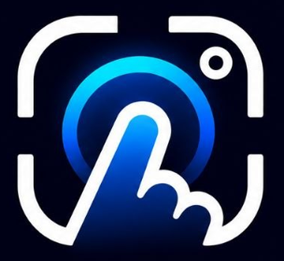

Узнай свой сахар одним пальцем
ScanAI оценивает уровень глюкозы по пульсовой волне: просто приложи палец к камере и вспышке телефона. Без игл, без расходников.
Миллионы людей прокалывают палец по 5 раз в день.
А что, если хватит просто приложить его к камере?
Предварительная проверка в медицинском центре Дару
По оценке специалистов медицинского центра Дару, ScanAI показал около 92% совпадения с глюкометром. Это предварительный результат со слов центра; официальный протокол испытания готовится и будет опубликован здесь. Не является клиническим подтверждением.
Всё, что нужно — палец и 30 секунд
Выберите раздел, чтобы посмотреть, как всё устроено.
Закройте камеру пальцем
Полностью накройте камеру и вспышку подушечкой пальца, без сильного нажима.
Не двигайтесь 30 секунд
Вспышка подсвечивает палец, камера ловит пульсацию крови.
Следите за прогрессом
Кольцо заполняется от 0 до 100%. Если палец сдвинулся — телефон завибрирует.
Получите результат
Значение в ммоль/л, цвет зоны и запись в историю.
Без иглы
Только камера и вспышка, ничего не нужно покупать.
Быстро
Около 30 секунд на замер, историей можно делиться с врачом.
Вибро-подсказки
Палец сместился — телефон сразу подскажет повторить.
Замер
Кольцо 0–100% и анимация пульса
Палочки окрашиваются по зонам: норма, повышен, высокий, низкий
История
Анимированный график замеров
Дни с повышенной глюкозой подсвечиваются
Календарь
Когда сахар был повышен

Ваше имявозраст · диагнозПрофиль и ИИ
Имя, возраст, диагноз и приветствие
Помощник даёт общие советы и не назначает лекарства и дозы. При плохом самочувствии — врач, 103 / 112.
Камера
Видео пальца со вспышкой
PPG-сигнал
Изменение яркости = пульс крови
Фильтр
Полоса 0,7–8 Гц, поиск ударов
17 признаков
Форма волны, вариабельность
Модель
Оценка в ммоль/л
Статус: исследовательский прототип. Точность оценки по камере не подтверждена клинически и зависит от условий съёмки. Мы публикуем только проверяемые результаты.
Скачать ScanAI
Android. Откройте файл на телефоне и разрешите установку из этого источника.
Скачать ScanAI.apk